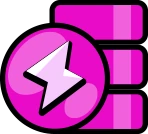
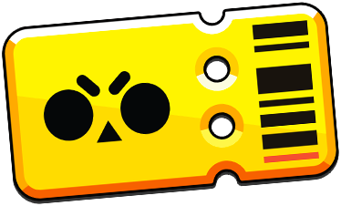
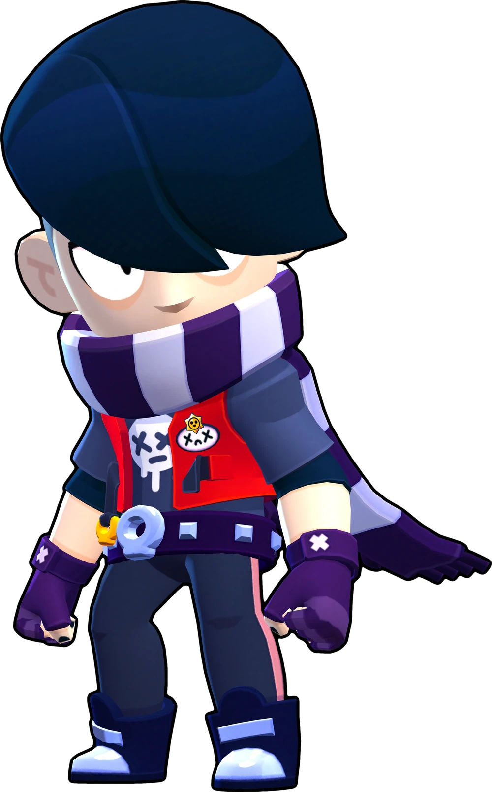
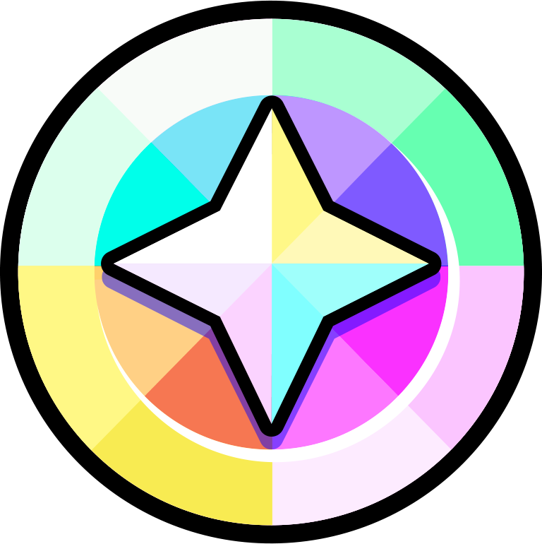
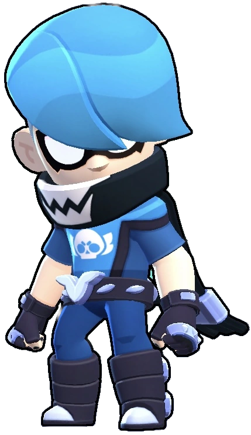
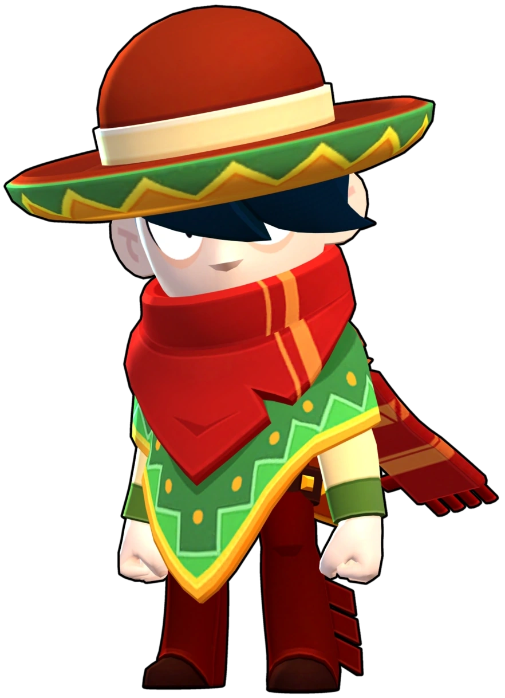
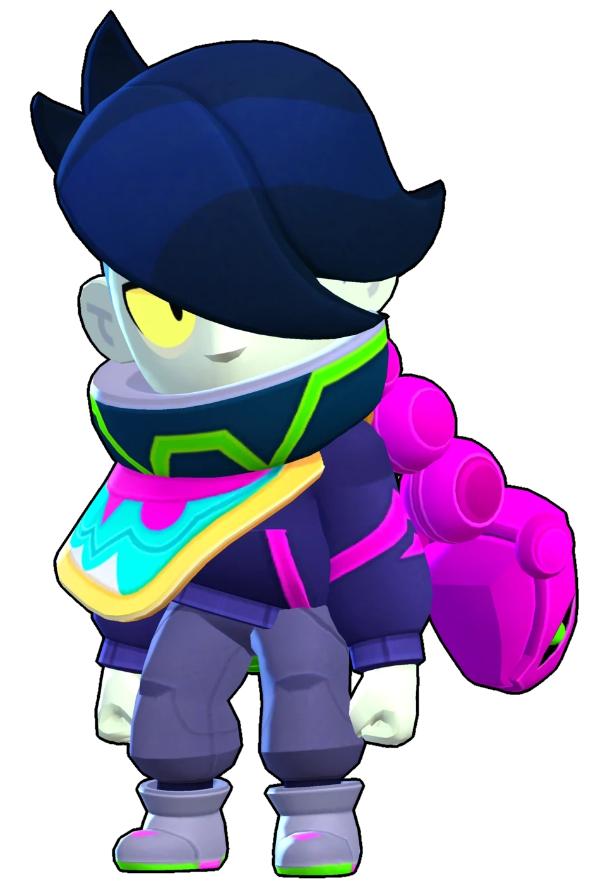
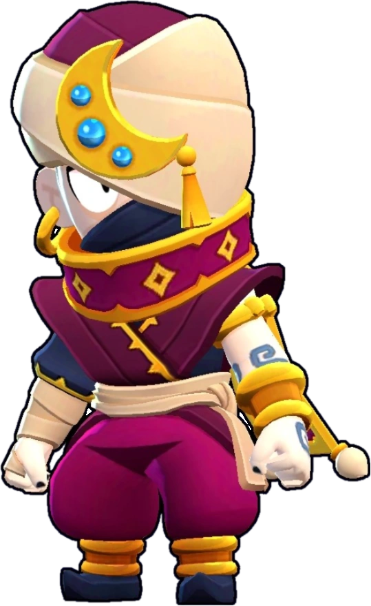
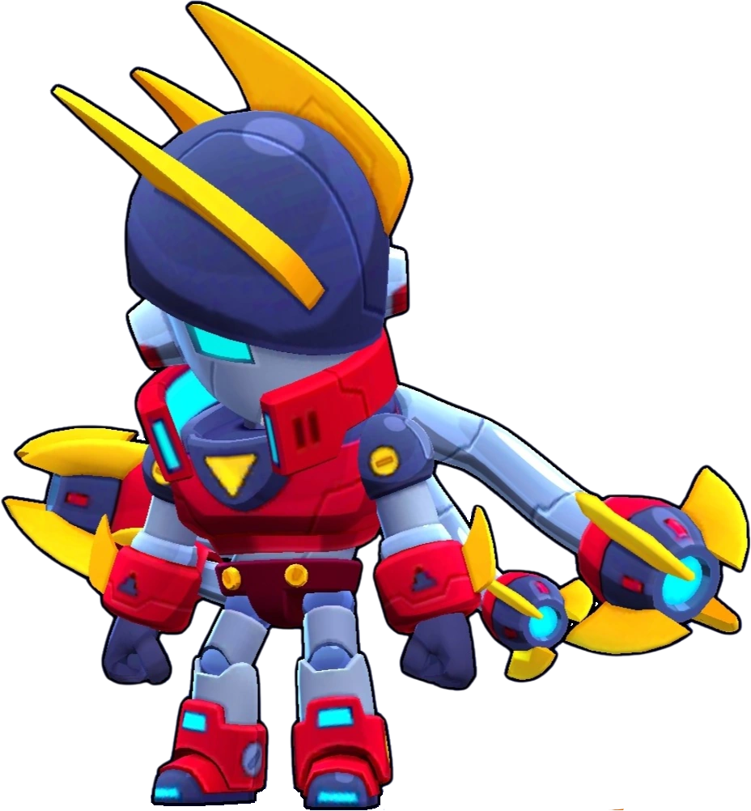
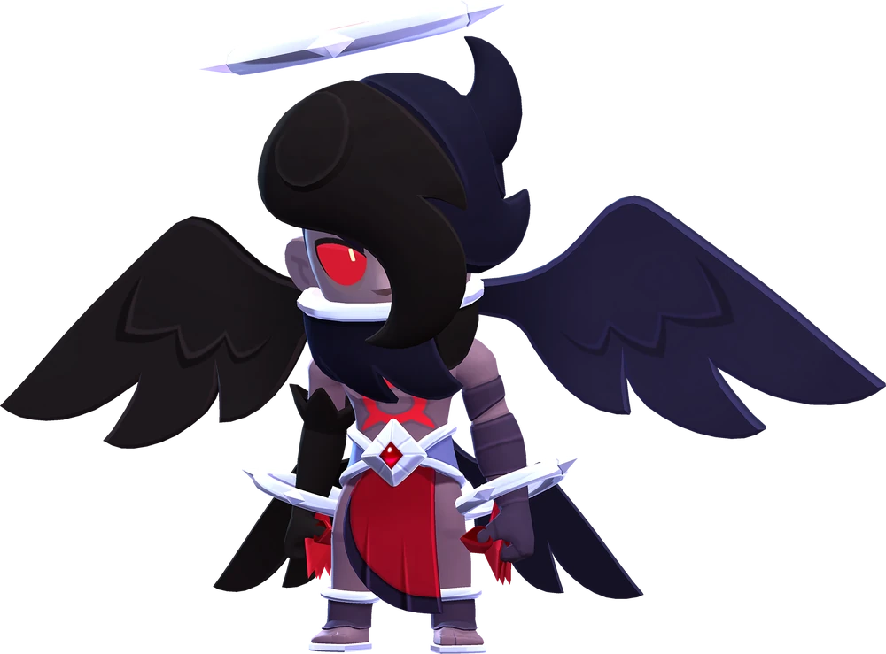

¿Como se juega a brawl Stars?
Brawl Stars sigue la misma tonica que la gran mayoría de juegos móviles. Buscar un gameplay sencillo para abarcar la mayor cantidad de público posible. Vamos a ver la jugabilidad del juego dividida en dos partes; dentro de la partido o in game y fuera de la partida. Ya que ambas son muy importantes para el disfrute del juego. En este apartado hablaremos de todo lo que no es dentro de la partida, si te interesa saber como es el gameplay puedes ver esta página

Fuera de la partida
Para algunos la jugabilidad antes de la partida en si es incluso más importante que la partida. Ya que es aquí donde los jugadores empiezan a completar su perfil como jugador de brawl stars. En este apartado vamos a mencionar: brawlers, consumibles, mejoras, camino de trofeos, camino de bralwers, clubes, brawl pass, la tienda y más cosas.
Brawlers
Como todoo juego de jugador contra jugador lo más importante son los personajes, en Brawl Stars tenemos a los brawlers. Los brawlers de Brawl Stars son los personajes jugables que cada jugador puede seleccionar para participar en las batallas del juego. Cada brawler tiene habilidades y características únicas, que incluyen un ataque básico, un ataque especial conocido como "Super" y, en muchos casos, una habilidad esterlar y un gadget que proporcionan ventajas adicionales. Los brawlers tienen diferenntes niveles, que van desde el primer nivel hasta el undécimo com tope. Los brawlers se dividen en varias categorías según su rareza: comunes, raros, súper raros, épicos, míticos y legendarios. Estos personajes pueden desbloquearse a través de las cajas de recompensa, el camino de trofeos, el Brawl Pass o comprándolos en la tienda del juego.
Cada brawler tiene su propio estilo de juego y estrategia, lo que añade profundidad y variedad al juego. Algunos son más efectivos en el combate cuerpo a cuerpo, mientras que otros son mejores a larga distancia. La elección del brawler adecuado y el uso estratégico de sus habilidades es clave para tener éxito en Brawl Stars y tienes 85 brawlers para poder jugar. ¡Hay mucha más información en esta página!
Consumibles

Dentro del juego, como en muchos otros, hay consumibles. Los consumibles se dividen en los siguientes: blines, puntos de fuerza, experiencia, creditos, oro y gemas. Estás ultimas las más valiosas dentro del juego, ya que suponen un rango extra de dificultad para conseguirlas, o bien metiendole dinero real dentro del juego a traves de microtransacciones.
Pero primero vamos a explicar para que sirven estos consumibles dentro del juego.
Oro
Empezaremos con uno de los recursos más imporrtantes del juego, el oro. Como si de la fiebre del oro se tratará, necesitas oro para poder avanzar. Cada vez más y más. El oro en brawl stars sirve para poder mejorar a tus brawlers para que puedan ser mejores dentro de la partida. Es un recurso que es tardío de conseguir.
Con oro puedes mejorar a tus personajes favoritos hasta el nivel máximo. Para únicamente subir a tu personaje al nivel máximo te harán falta un total de ¡7765! Puede no parecer mucho pero realmente lo és.
Esta mejora es sin contar las ventajas que tiene cada brawler disponible. Como los gadgets, que cuestan 1000 de oro, las habilidades estelares que son 2000 de oro, las ventajas que van de 1000 a 2500 de oro y las hipercargas que cuestan 5000 de oro. Para tener la build completa de un brawler que son; un gadget, una habilidad estelar, dos ventajas y una hipercarga te harán falta un total ¡17765 minímo! y si lo quieres con absolutamente todo te hará fallta ¡24765! es demasiado oro, odio este juego
Puntos de fuerza
Los puntos de fuerza es ese consumible que a nadie le gusta que le toque pero que es imprescindible para poder avanzar en el juego. Al contrario que con el oro, los puntos de fuerza tienen muchas menos utilidades. Estos consumibles solo sirven para poder subir de nivel a tus personajes hasta el máximmo. Para poder subir a tus personajes al máximo te harán faltaa un total de 3740. Que es una cantidad que se consigue con comódidad.
Blines
Los blines son uno de los consumibles más frecuentes dentro del juego. Estos tienen unicamente la función de conseguir cosmeticos de 19 (rara) a 149 (épica) gemas. Además también sirve para poder ilusionarte en los drops que abras. En total hasta fecha de hoy hay 314 skins y más de 1000 pines y sprays que son canjeables a cambio de blines. Los precios van desde 750 blines por un pin o un spray hasta los 5000 por una skin de calidad épica. Las formas de conseguirlo son mediante gemas, mediante drops o por el brawl pass.
Créditos
Los Créditos son una moneda del juego introducida en la actualización del diciembre 2022. Los créditos permiten a los jugadores desbloquear Brawlers del Camino Starr. ¡Con los creditos podrás desbloquear a todos los brawlers en 6 años si comienzas a jugar hoy sin meterle dinero!
Los costes son los siguientes; por un brawler especial tienes que reunir 160 créditos, por uno super especial son 430, por uno épico 925, por uno mitíco son 1900 créditos y por uno legendario son 3800. Aparte de eso están las famas que son marcos de pantalla que desbloqueas despues de tener a todos los brawlers. Aunque su coste es aún mayor, siendo que sus costes van de cientos de miles de creditos. La obtención de estos serán como los anteriormente mencionados.
Experiencia
La experiencia sirve para poder subir niveles dentro del brawl pass, tanto gratuito como en el de pago. Estos se puden conseguir de todas las maneras anteriormente mencionados. Además se le suma la vía de obtención mediante partidas ganadas, siempre que ganes una partida se te daran 20 ppuntos de experiencia.
Gemas
Las gemas son el sello de estatus dentro de los juegos más famosos de la compañía finlandesa, un símbolo de, haber jugado mucho al juego o haberle metido dinero real. Como sea, las gemas sirven para comprar practicamente todo lo que hay en el juego. Está moneda ficticia tiene únicamente por encima al dinero real que sirve para comprar el brawl pass y oferta exclusivas. Pero siguiendo con el tema, lo puedes comprar practicamente todo con las gemas. Estos hijos verdes del diablo unicamente se pueden conseguir complentado el brawl pass (50 al mes) o con dinero real.
Camino Starr
El Camino Starr en Brawl Stars es una función que reemplazó el antiguo sistema de desbloqueo de brawlers y progresión. Es una ruta lineal en la que los jugadores pueden desbloquear brawlers, skins y otras recompensas a medida que acumulan trofeos y progresan en el juego. En lugar de depender de cajas aleatorias, el Camino Starr permite elegir cuándo desbloquear ciertos brawlers, otorgando más control sobre tu progreso. También incluye recursos como oro, puntos de fuerza y otros ítems para mejorar tus brawlers y personalizar tu experiencia.
| Rareza brawler | Coste en créditos | Coste en gemas |
|---|---|---|
| Especial | 160 | 19 |
| Super especial | 430 | 79 |
| Épico | 925 | 169 |
| Mitíco | 1900 | 349 |
| Legendario | 3800 | 699 |
Camino de trofeos
Hay otro camino mas por ver. El Camino de Trofeos en Brawl Stars es el sistema clásico de progresión que recompensa a los jugadores por acumular trofeos al ganar partidas. A medida que subes tu cantidad total de trofeos, desbloqueas recompensas como brawlers (en niveles específicos), monedas, puntos de fuerza, skins, emotes y cajas. Es una forma de medir el progreso general en el juego, incentivando la mejora continua y la exploración de nuevos personajes y recursos. Aunque ha sido complementado por el Camino Starr, sigue siendo una parte esencial del juego para nuevos jugadores.
Los trofeos se obtienen jugando Eventos. Si tu equipo gana o si sobrevives el tiempo suficiente jugando Supervivencia, recibirás trofeos. Sin embargo, también puedes perder trofeos si tu equipo pierde o si eres derrotado demasiado pronto jugando Supervivencia.
El conseguir múltiples victorias consecutivas otorgara una bonificación de los trofeos obtenidos según cuantas victorias se hayan logrado, el contador de victorias aumenta con cada victoria conseguida y se reinicia a 0 en caso de perder, sin embargo empatar no reiniciara ni sumará al contador de victorias, así como tampoco otorgará los trofeos extra de la bonificación. La racha de victorias más alta se mostrará en el perfil del jugador.
Clubes
Los clubes en Brawl Stars son grupos sociales y competitivos que permiten a los jugadores interactuar, colaborar y competir en equipo. Cada club puede tener hasta 30 miembros, y los jugadores pueden unirse o crear uno una vez alcanzado un nivel mínimo de trofeos. Los líderes de los clubes pueden gestionar la membresía, establecer requisitos de entrada o mantener el club privado. Dentro de los clubes, los jugadores tienen acceso a un chat grupal, lo que facilita la socialización y la coordinación para jugar partidas amistosas o formar equipos.
La Megahucha es una mecánica de progresión en Brawl Stars que permite a los jugadores acumular recompensas de manera constante. A medida que juegas y obtienes fichas en tus partidas, estas se van acumulando en la Megahucha en lugar de desbloquear pequeñas cajas como en el sistema anterior. Una vez que se llena, puedes abrirla para recibir recompensas como oro, puntos de fuerza y blines, los cuales son esenciales para mejorar tus brawlers o personalizar tu experiencia en el juego. Este sistema es transparente y predecible, ya que sabes exactamente cuándo obtendrás tus recursos, eliminando el elemento de azar que tenían las cajas. Los eventos especiales de clubes tambien funcionan de la misma manera.
Megahucha y eventos especiales de club
Brawl Pass 
El Brawl Pass es un sistema de recompensas por temporadas introducido en Brawl Stars que brinda a los jugadores una manera de obtener contenido exclusivo y avanzar más rápido en el juego. Funciona como un pase de batalla que permite desbloquear premios al completar misiones y acumular puntos de trofeos a lo largo de una temporada. Este sistema está diseñado para ofrecer un equilibrio entre contenido gratuito y recompensas adicionales para quienes compran el pase premium.
El Brawl Pass se divide en dos pistas: una gratuita y otra premium. La pista gratuita está disponible para todos los jugadores y otorga recompensas básicas como cajas, fichas, monedas y puntos de fuerza. Por otro lado, la pista premium, que se desbloquea comprando el pase con gemas, incluye recompensas exclusivas como nuevos brawlers, aspectos especiales, gestos animados y reacciones temáticas de cada temporada.La progresión en el Brawl Pass se basa en completar misiones diarias, semanales y especiales que otorgan fichas. Estas fichas se acumulan para avanzar por los niveles del pase. Cada temporada tiene una temática única, lo que se refleja en las recompensas, el diseño de los mapas y los eventos especiales.
Cosmeticos
En Brawl Stars, los cosméticos son una parte fundamental del juego, diseñados para permitir a los jugadores personalizar la apariencia y estilo de sus personajes. Estos elementos no afectan el rendimiento en las partidas, pero añaden una capa de expresividad y creatividad que enriquece la experiencia. Los cosméticos abarcan desde aspectos visuales que transforman a los brawlers, hasta pequeños detalles como pines y efectos especiales, convirtiéndose en una manera de que los jugadores muestren su personalidad y destaquen entre los demás.Entre los cosméticos más populares están los aspectos o skins, que alteran la apariencia de un brawler. Algunos aspectos son simples cambios de color, mientras que otros ofrecen diseños completamente nuevos con animaciones, efectos visuales e incluso sonidos únicos. Estos aspectos tienen niveles de rareza que determinan su precio y complejidad, desde los más básicos hasta los legendarios. Por ejemplo, aspectos como Phoenix Crow o Mecha Bo incluyen cambios detallados en sus ataques y habilidades, lo que los hace altamente codiciados. Además, los skins suelen estar ligados a temáticas específicas de temporadas, eventos o celebraciones, lo que los hace aún más atractivos y limitados. Otro tipo de cosméticos muy utilizados son los pines o emojis, que los jugadores pueden usar durante las partidas para expresar emociones como alegría, enojo o tristeza. Cada brawler tiene su conjunto único de pines, y algunos de ellos están animados, añadiendo un toque dinámico a la comunicación dentro del juego. Además, los jugadores pueden desbloquear pines temáticos relacionados con eventos especiales o aspectos específicos, lo que los convierte en coleccionables únicos. Las animaciones y reacciones también se han ampliado recientemente, permitiendo que los jugadores personalicen aún más su estilo.
La obtención de cosméticos en Brawl Stars varía según su exclusividad. Muchos están disponibles en la tienda a cambio de gemas, monedas estelares u otros recursos, mientras que otros solo se consiguen a través del Brawl Pass o eventos especiales. Estos eventos suelen ser desafíos temáticos que requieren habilidad y dedicación, otorgando aspectos o pines exclusivos como recompensa. Esta exclusividad añade valor a los cosméticos, ya que los jugadores que los poseen demuestran haber participado en actividades limitadas o haber logrado metas específicas dentro del juego
En esencia, los cosméticos de Brawl Stars son una manera de personalizar y destacar en el campo de batalla, sin alterar el equilibrio del juego. Desde aspectos visuales hasta detalles como pines y efectos, estos elementos no solo enriquecen la experiencia del jugador, sino que también fomentan la creatividad y el deseo de coleccionarlos. Su constante renovación y vinculación con temáticas únicas mantienen a la comunidad interesada, convirtiéndolos en un aspecto esencial del universo de Brawl Stars.
Ejemplo de skins con Edgar
Sabias que Edgar es el único brawler que tiene todas las calidades de skins del juego?
| Rareza de la Skin | Skin | Coste en blines | Coste en gemas |
|---|---|---|---|
| Por defecto |  | 0  | 0 |
| Especial |  | 160 | 29 |
| Super especial |  | 2750 | 79 |
| Épico |  | 5000 | 149 |
| Mitíco |  | NO DISPONIBLE | 199 |
| Legendario |  | NO DISPONIBLE | 299 |
| Hipercarga |  | NO DISPONIBLE | 499 |
 Braian Arancibia
Braian Arancibia Aya El Baarar
Aya El Baarar